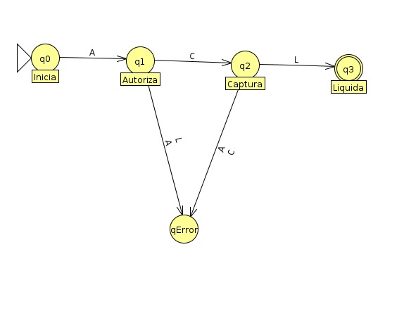
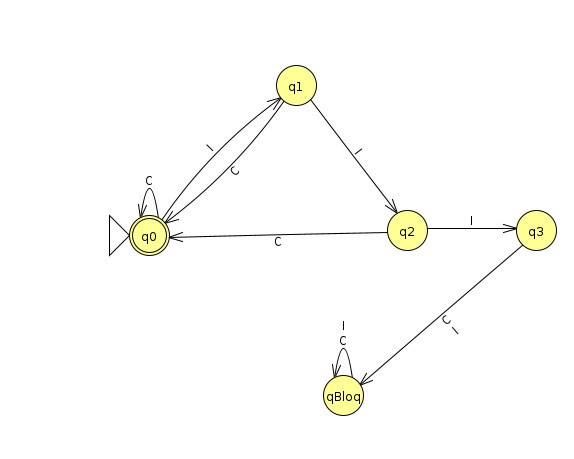
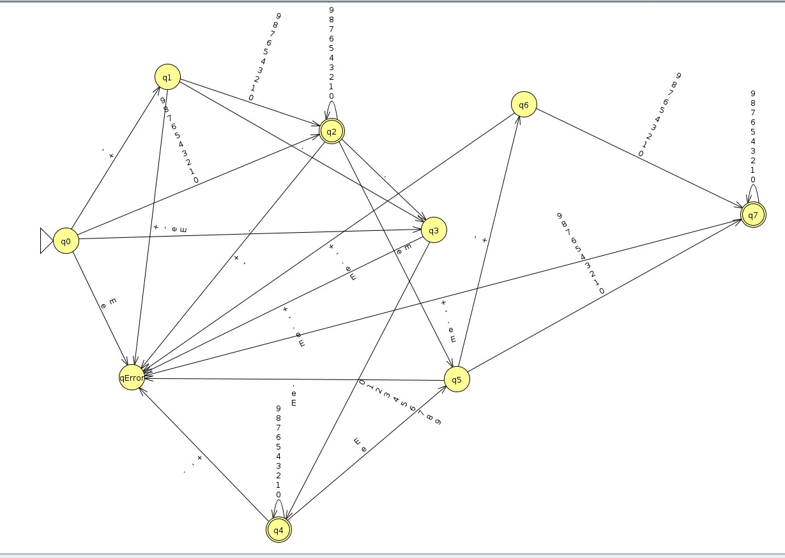
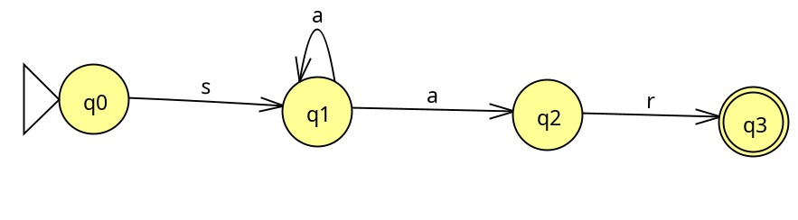
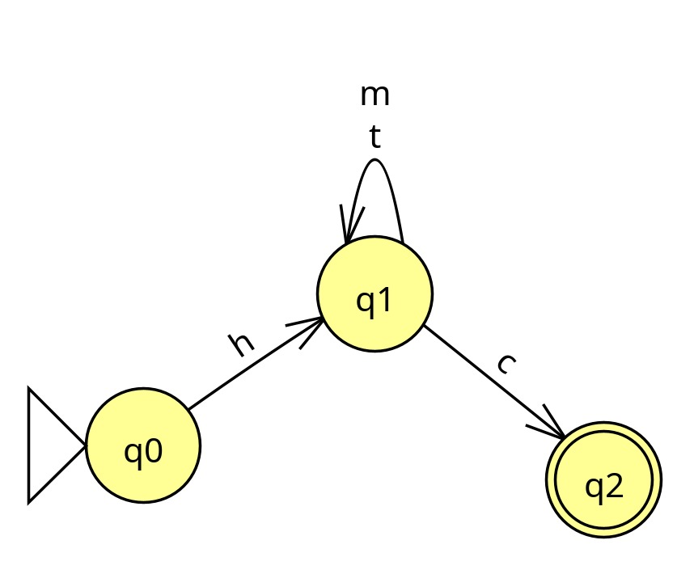
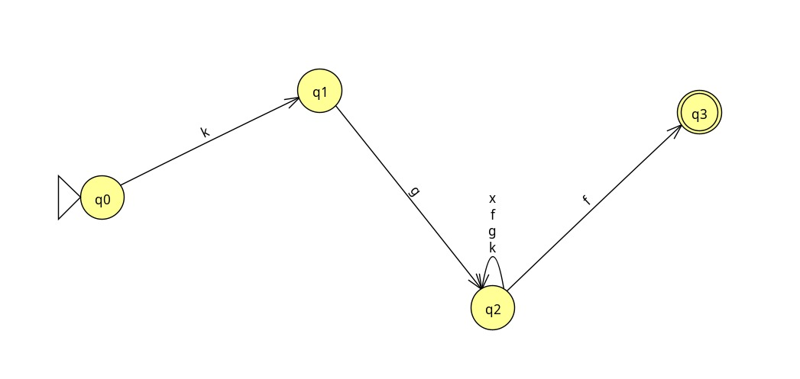

Bienvenido al Simulador de Autómatas
Selecciona uno de los ejercicios a continuación para ver el problema, su diagrama y ejecutar pruebas de cadenas.
Bloque 1: Autómatas Finitos Deterministas (AFD)
Ejercicio 1
Validador de Flujo de Transacciones Bancarias
Ejercicio 2
Sistema de Seguridad IoT (Cerradura)
Ejercicio 3
Analizador de Notación Científica
Bloque 2: Autómatas Finitos No Deterministas (AFND)
Ejercicio 4
IDS - Detección de Ataques en Red
Ejercicio 5
Protocolo de Telemetría IoT
Ejercicio 6
Secuencias BioInformáticas
Ejercicio 1: Validador de Flujo de Transacciones Bancarias
Descripción del Problema Real
Un sistema de pagos debe asegurar que una transacción pase por los estados correctos (Autorización -> Captura -> Liquidación) antes de ser considerada "Completada". No se puede liquidar sin capturar.
Autómata Finito Determinista (AFD)
Alfabeto (Σ): {a, c, l}
Estados (Q): {q0, q1, q2, q3, qE}
Estado Inicial: q0 | Estados de Aceptación (F): {q3}
Ver Tabla de Transiciones δ(Q, Σ)
| Estado | a (Autorizar) | c (Capturar) | l (Liquidar) |
|---|---|---|---|
| -> q0 | q1 | qE | qE |
| q1 | qE | q2 | qE |
| q2 | qE | qE | q3 |
| * q3 | qE | qE | qE |
| qE | qE | qE | qE |

Simulador
Ingresa la secuencia de estados. Ejemplo válido: acl. Ejemplo inválido: ac, al
Ejecución del Autómata (AFD)
Ejercicio 2: Sistema de Seguridad IoT (Cerradura Inteligente)
Descripción del Problema Real
Una cerradura inteligente permanece operativa (aceptada) mientras los intentos sean correctos. Si detecta 3 intentos incorrectos consecutivos ('i', 'i', 'i'), entra en un estado inestable (q3). Cualquier intento posterior, sea correcto o no, provocará que la cerradura caiga en un estado de bloqueo permanente (qBloq).
Autómata Finito Determinista (AFD)
Alfabeto (Σ): {c (correcto), i (incorrecto)}
Estados (Q): {q0, q1, q2, q3, qBloq}
Estado Inicial: q0 | Estados de Aceptación (F): {q0} (Operativa)
Ver Tabla de Transiciones δ(Q, Σ)
| Estado | c (Correcto) | i (Incorrecto) |
|---|---|---|
| -> * q0 | q0 | q1 |
| q1 | q0 | q2 |
| q2 | q0 | q3 |
| q3 | qBloq | qBloq |
| qBloq | qBloq | qBloq |

Simulador
Ingresa la secuencia de intentos ('c' o 'i' minúscula). Ejemplo válido (Operativa al final): cic, iic. Ejemplo inválido (Bloqueada): iii, iiic
Ejecución del Autómata (AFD)
Ejercicio 3: Analizador Léxico para Notación Científica
Descripción del Problema Real
Un compilador necesita validar si una cadena de texto representa un número válido en notación científica (ej: +3.14e-10, .5e2). El autómata preprocesa la entrada real convirtiendo cada carácter a un alfabeto abstracto: s (signo), d (dígito), p (punto), e (exponente).
Autómata Finito Determinista (AFD)
Alfabeto (Σ): {s (signo ±), d (dígito 0-9), p (punto .), e (exponente)}
Estados (Q): {q0, q1, q2, q3, q4, q5, q6, q7, qError}
Estado Inicial: q0 | Estados de Aceptación (F): {q2, q4, q7}
Ver Tabla de Transiciones δ(Q, Σ)
| Estado | s (Signo) | d (Dígito) | p (Punto) | e (Exponente) |
|---|---|---|---|---|
| -> q0 | q1 | q2 | q3 | qError |
| q1 | qError | q2 | q3 | qError |
| * q2 | qError | q2 | q3 | q5 |
| q3 | qError | q4 | qError | qError |
| * q4 | qError | q4 | qError | q5 |
| q5 | q6 | q7 | qError | qError |
| q6 | qError | q7 | qError | qError |
| * q7 | qError | q7 | qError | qError |
| qError | qError | qError | qError | qError |

Simulador
Ingresa directamente el número en notación científica. El sistema lo traduce automáticamente al alfabeto del autómata.
Válidos: +3.14e-10, .5e2, 3e5 — Inválidos: e5, 3.e2, +e1
Ejecución del Autómata (AFD)
Ejercicio 4: IDS - Detección de Ataques (AFND)
Descripción del Problema Real
Se busca detectar un patrón específico de ataque: Un intento de conexión (s), seguido de uno o más respuestas (a), y un reset abrupto (r).
Autómata Finito No Determinista (AFND)
Alfabeto (Σ): {s, a, r}
Estados (Q): {q0, q1, q2, q3}
Estado Inicial: q0 | Estados de Aceptación (F): {q3}
Ver Tabla de Transiciones δ(Q, Σ)
| Estado | s (SYN) | a (ACK) | r (RST) |
|---|---|---|---|
| -> q0 | q1 | ∅ | ∅ |
| q1 | ∅ | q1, q2 | ∅ |
| q2 | ∅ | ∅ | q3 |
| * q3 | ∅ | ∅ | ∅ |

Simulador
Ingresa la secuencia de logs. Ejemplo válido: sar, saar.
Ejecución del Autómata (AFND)
Ejercicio 5: Validación de Protocolo de Telemetría IoT (AFND)
Descripción del Problema Real
Un dispositivo IoT envía paquetes de datos. El paquete debe empezar con un encabezado HDR, seguido de cualquier cantidad de lecturas (TEMP o HUM), y finalizar exclusivamente con un código CRC.
Autómata Finito No Determinista (AFND)
Alfabeto (Σ): {h (HDR), t (TEMP), m (HUM), c (CRC)}
Estados (Q): {q0, q1, q2}
Estado Inicial: q0 | Estados de Aceptación (F): {q2}
Ver Tabla de Transiciones δ(Q, Σ)
| Estado | h (HDR) | t (TEMP) | m (HUM) | c (CRC) |
|---|---|---|---|---|
| -> q0 | {q1} | ∅ | ∅ | ∅ |
| q1 | ∅ | {q1} | {q1} | {q2} |
| * q2 | ∅ | ∅ | ∅ | ∅ |

Simulador
Ingresa la secuencia del protocolo. Ejemplo válido: hc, httmc, htmc.
Ejecución del Autómata (AFND)
Ejercicio 6: Reconocimiento de Secuencias Genéticas (AFND)
Descripción del Problema Real
Buscamos identificar un patrón funcional en una cadena de aminoácidos: Una Lysina (k), seguida de una Glicina (g), seguida de cualquier aminoácido (x) repetido 0 o más veces, y terminando en Fenilalanina (f).
Autómata Finito No Determinista (AFND)
Alfabeto (Σ): {k, g, f, x (cualquiera)}
Estados (Q): {q0, q1, q2, q3}
Estado Inicial: q0 | Estados de Aceptación (F): {q3}
Ver Tabla de Transiciones δ(Q, Σ)
| Estado | k (Lys) | g (Gly) | f (Phe) | x (Cualquiera) |
|---|---|---|---|---|
| -> q0 | {q1} | ∅ | ∅ | ∅ |
| q1 | ∅ | {q2} | ∅ | ∅ |
| q2 | {q2} | {q2} | {q2, q3} | {q2} |
| * q3 | ∅ | ∅ | ∅ | ∅ |

Simulador
Ingresa la secuencia de aminoácidos. Ejemplo válido: kgf, kgxf, kggfff.